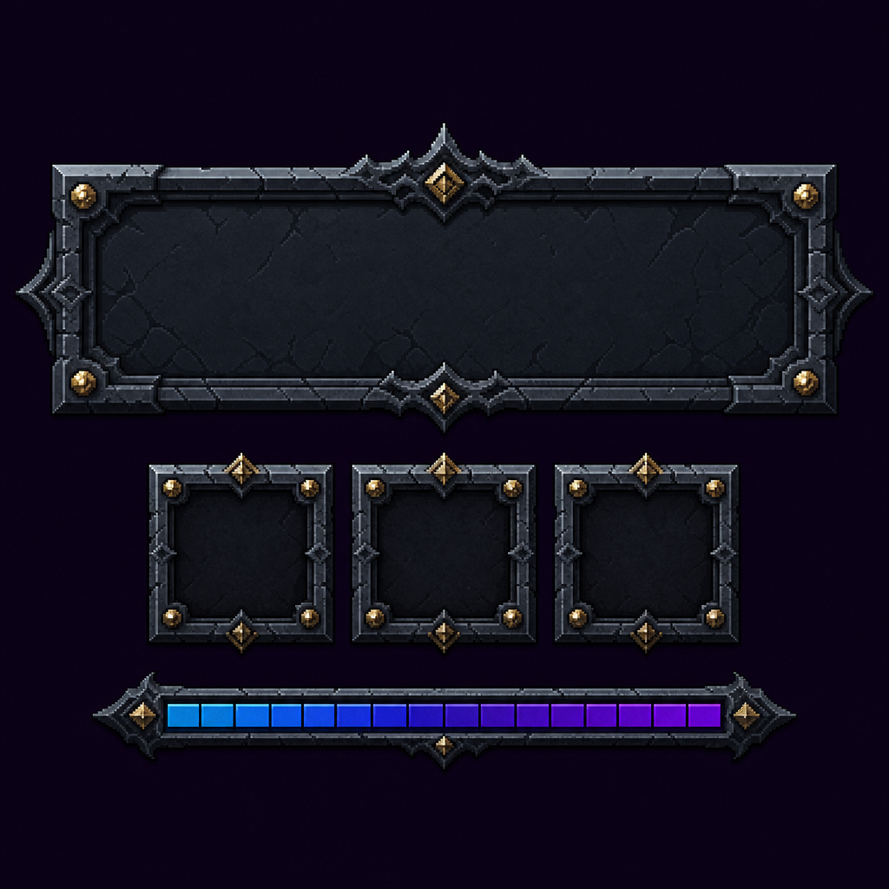
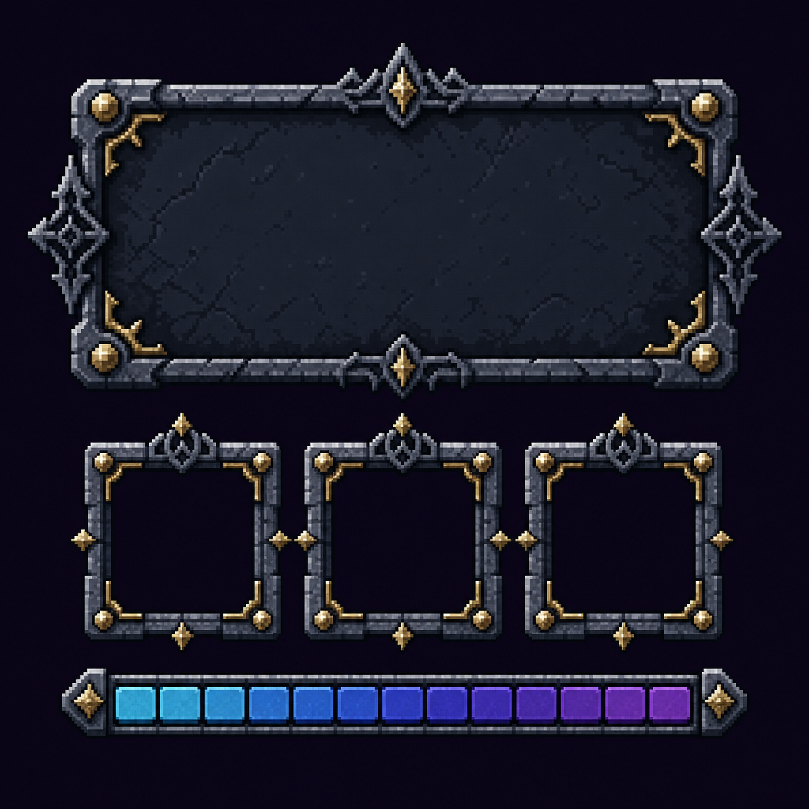
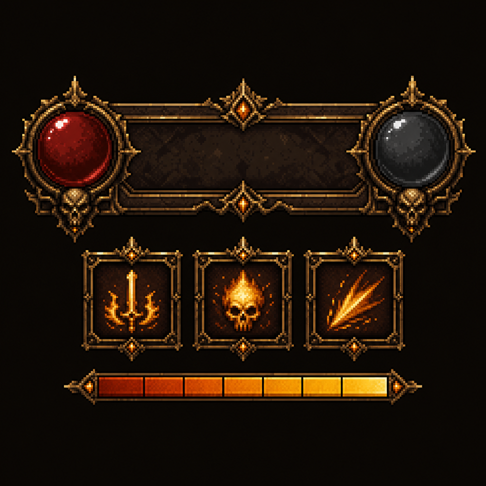
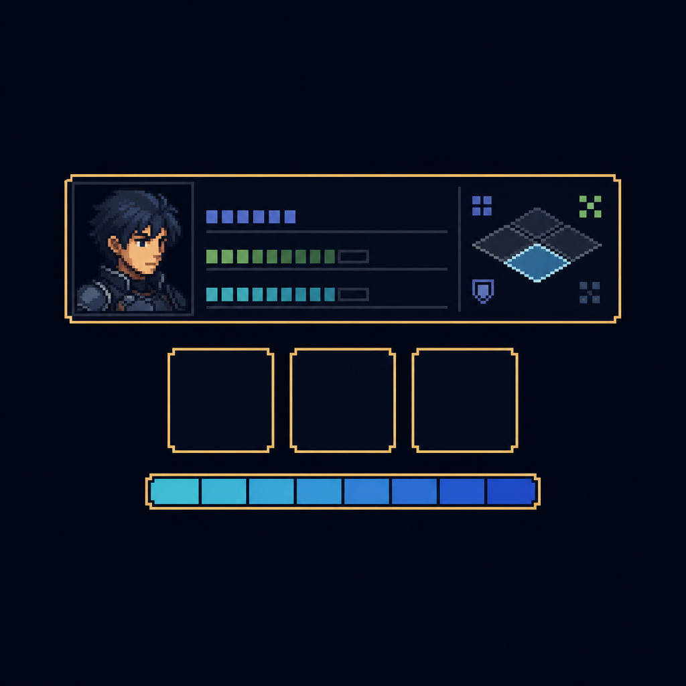

混合路线第 1 步：gpt-image-2 探气质（4 套）→ 你选 vibe → 我用 SVG/Godot 落精确功能件
../hd-pixel-ui-material-sample.html（精确但矢量模拟）。

① 拟物华丽 · 冷石哥特
手绘质感、平滑渐变、最唬人的暗黑哥特石雕。
拟物·非像素最华丽调色：冷灰石 + 金角饰 + 蓝紫资源条 + 深紫黑底（传承现体系）
取舍：成品最华丽；但不是像素、与你「高清像素」方向不符；这种拟物质感最依赖素材、且与像素 sprite 管线气质割裂。
定位：作「如果改走非像素华丽」的对照候选。

② 高清像素 · 冷石哥特
真像素（可见方块 + 抖色）；①的像素化版本。
真·像素最贴现体系调色：冷灰石 + 金丝角饰 + 蓝→紫分段条 + 深紫黑底
取舍：最贴近你「高清像素」目标；与现有冷紫黑/金体系传承最好、断代最小；华丽张力中等。
定位：中性偏「稳妥基线」候选。

③ 高清像素 · 暖金华丽
真像素、暖铜金 + 红黑宝珠 + 骷髅 + 已自带像素技能图标（剑/骷髅/斩击）。
真·像素最华丽像素调色：暖铜金 + 暗红 + 橙→金资源条 + 棕黑底（偏暖，与现冷紫黑断代）
取舍：像素方向里最华丽、最 Diablo HUD 味；宝珠/骷髅是 AI 发挥非我们布局；自带的像素图标正好预览像素管线能交付什么。
定位：「华丽度优先」候选（需接受偏暖+断代）。

④ 高清像素 · 极简克制
真像素、薄金描边 + 扁平深蓝 + 自带角色头像 + 信息行 + 战术格。
真·像素最可读调色：薄金 + 扁平深蓝黑 + 青→蓝资源条（偏冷、装饰最少）
取舍：最干净最可读，Triangle Strategy / 火纹味；头像/战术格是 AI riff（头像正属必须素材项，正好预览像素立绘）；华丽张力弱、信息优先。
定位：「可读性/信息优先」候选。